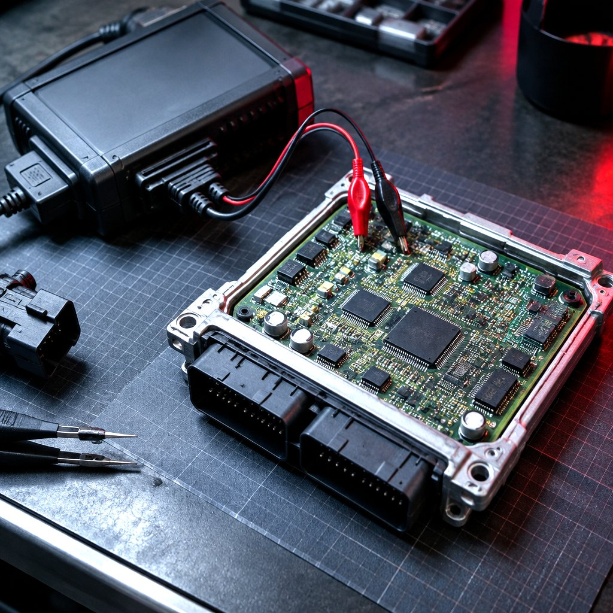

Блоки, которые «умерли» после прошивки
Поднимаем блоки управления после неудачных работ у других мастеров: потеря связи, кривая запись, «кирпич». Плюс заводские прошивки из базы AlienTech и обновление ПО во всех блоках BMW и VAG.
Что поднимаем
Чаще всего приносят блок после неудачной попытки прошивки или замены ЭБУ без привязки.
Потеря связи с блоком
Блок не выходит на диагностику после прерванной записи. Восстанавливаем загрузчик и заводскую прошивку.
Кривая прошивка
Машина не заводится, троит, уходит в аварийный режим. Возвращаем рабочее ПО и проверяем параметры.
Неверная привязка
Блок заменён, но не привязан к автомобилю: восстанавливаем соответствие и иммобилайзер.
Заводская прошивка
При необходимости прошивка заменяется на заводскую загрузкой из базы данных компании AlienTech.
Обновление ПО и «мелочи», которые важны
Иногда нужна не мощность, а чтобы все блоки говорили на одной версии и не сыпали ошибками.
Обновление во всех блоках
BMW и VAG-группа: обновляем программное обеспечение в блоках двигателя, коробки, кузова и комфорта.
Отключение ошибок
Полное отключение любых ошибок в ЭБУ двигателя — когда причина устранена или система удалена.
Дроссельная заслонка
Отключение электронной заслонки для нестандартных конфигураций и проектов.
Иммобилайзер
Удаление иммобилайзера на большинстве автомобилей: при утере всех ключей, замене блоков, для проектов.
Как проходит работа с блоком
Сначала диагностика — потом действия. Блок не «прошиваем наугад».
1. Диагностика
Смотрим, выходит ли блок на связь, читается ли, что записано сейчас.
2. Резервная копия
Считываем текущее содержимое и сохраняем: это страховка на любой случай.
3. Восстановление или прошивка
Пишем заводское ПО из AlienTech или вашу программу, при необходимости — на снятом блоке.
4. Проверка на автомобиле
Запуск, параметры, отсутствие ошибок, тестовая поездка.
Когда блок не поднять
Есть повреждения, которые программно не лечатся — скажем сразу.
Аппаратные повреждения
Пробитые ключи, сгоревшие процессоры, залитый блок после воды — это ремонт электроники, а не прошивка. В таких случаях предложим замену блока с привязкой к автомобилю.
Блоки после 2021 года
Часть блоков закрыта производителем: работаем на снятом блоке. Если конкретный блок не поддерживается — скажем до оплаты, а не после.
Про блоки
Вопросы по восстановлению и обновлению ПО.
Да, это профильная задача. Привозите блок или автомобиль: считаем текущее состояние, восстановим заводское ПО.
Большинство блоков до 2021 года прошиваются через разъём. Закрытые блоки после 2021 года — только на снятом.
Если обновление нужно для других блоков, программу двигателя сохраняем и возвращаем. Обсуждаем до работ.
Это снижает защиту от угона. Решение за владельцем; мы объясняем риск и делаем только по его просьбе.
На восстановление связи и записи — да. Если блок имеет аппаратное повреждение, гарантия на такой блок не действует — предупреждаем заранее.
Блок не выходит на связь?
Позвоните: подскажем, что делать, и примем блок в работу.